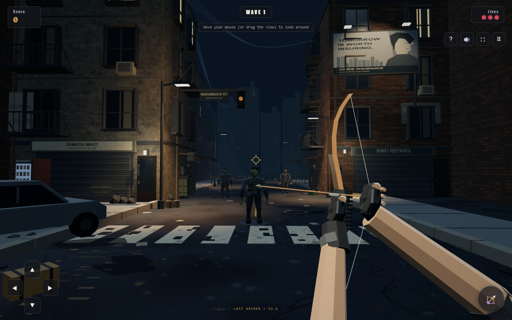

LAST ARCHER / LOCAL REVIEWV2.6 — NAKAMACHI
One playable street, compared with the art target. The right-hand image is an unretouched browser capture of the 3D preview. The concept is shown only on this comparison page.
01 / CONCEPT TARGET — ILLUSTRATION02 / ACTUAL V2.6 — REALTIME BROWSER CAPTURE
ACTUAL BROWSER CAPTURE / STREET
What is now present
- Windows, balconies, fire escapes, utility cables, storefront detail and warm local shadows restored from the approved corner.
- Worn plaster and brick paint, pavement cracks, stains, drains, a manhole and reflections of the 3D scene.
- A 1.81 m skinned shambler with jacket layers, fingers, subtle emissive eyes and a grounded animated collapse.
- Connected first-person arms, gloves, curved bow limbs, arrow nock, moving string and release follow-through.
Still short of the concept
- The illustration has much richer painted faces, cloth folds, car damage and varied shopfronts. The preview still reads as low-poly.
- The hands and zombie use simplified anatomy and a small rig; their motion needs an artist-led close-up pass.
- The billboard portrait is a simple graphic, not the concept’s detailed anime character art.
- Reflections and shadows add rendering cost. Browser checks passed; performance on a real phone remains unverified.